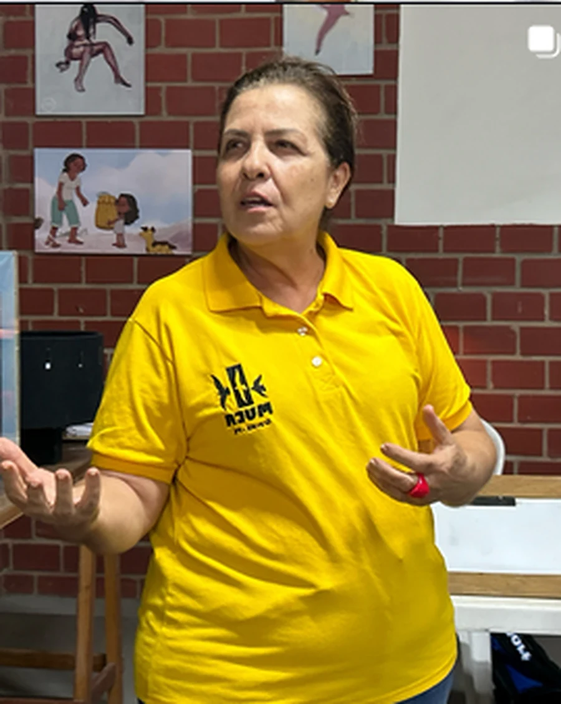
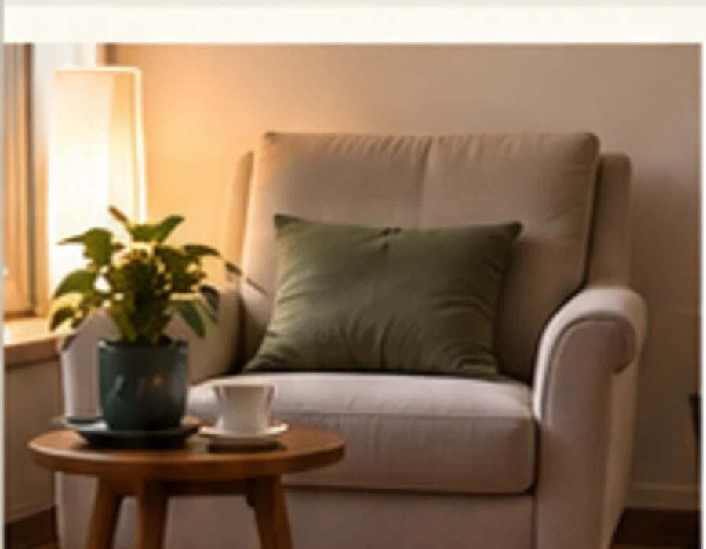

Mais equilíbrio
Um espaço para olhar com mais calma para o que está acontecendo.
Saúde emocional para uma vida mais plena
Terapia Integrativa e TRG, presencial e online, para você compreender melhor o que está vivendo e encontrar caminhos com mais clareza, equilíbrio e sentido.
Atendimento presencial em espaço particular e online, mediante agendamento.
Escuta, presença e respeito pela sua história. — Silvana Delacio
Um espaço para olhar com mais calma para o que está acontecendo.
Para reconhecer necessidades, limites e escolhas com mais clareza.
Uma conversa sem pressa, conduzida com atenção à sua experiência.
Para se perceber com mais atenção no ritmo da vida cotidiana.
Sobre mim
Professora com especialização em Educação e Capacitação Pedagógica pela UFRPE, Terapeuta Integrativa com formação pelo IBTRG/CITRG e arte-educadora em projetos sociais do MUCA.
Sua trajetória reúne educação, arte-educação e terapia integrativa. Hoje, esse percurso se traduz em uma condução atenta à história, ao momento e às necessidades de cada pessoa.
Como funciona o acompanhamento
Terapia Integrativa • TRG
O primeiro contato também serve para entender o que você está vivendo, esclarecer dúvidas sobre a forma de trabalho e conversar sobre as possibilidades de acompanhamento. A condução é explicada de maneira simples, sem exigir que você chegue com respostas prontas.
Temas que podem chegar
Cada pessoa chega com uma história diferente. Estes são alguns temas que podem aparecer ao longo do acompanhamento.
Como funciona
O caminho começa com uma conversa. A partir dela, os próximos passos são combinados de forma clara.
Você entra em contato para conversar sobre sua demanda e esclarecer dúvidas iniciais.
O momento atual, suas necessidades e as possibilidades de acompanhamento são conversados com calma.
Silvana explica sua forma de condução e combina com você os próximos encontros.
Os encontros seguem respeitando seu momento e os temas que surgirem ao longo do percurso.
Atendimento
Escolha a modalidade que fizer mais sentido para sua rotina. Os detalhes são combinados durante o agendamento.

Presencial
Os encontros acontecem em um espaço particular, pensado para oferecer privacidade, conforto e tranquilidade.
A localização detalhada é informada durante o agendamento.
Saber maisOnline
O encontro acontece por videochamada, em horário reservado, com orientações de acesso combinadas no agendamento.
Uma opção para quem prefere realizar os encontros de onde estiver.
Saber maisDúvidas frequentes
Se alguma dúvida não estiver aqui, você pode entrar em contato e conversar diretamente com Silvana.
Falar com SilvanaVocê não precisa conhecer a abordagem antes do primeiro contato. Silvana explica como conduz os encontros, esclarece dúvidas e conversa com você sobre as possibilidades de acompanhamento.
É um momento inicial para falar sobre o que está acontecendo, entender sua demanda e esclarecer dúvidas antes de combinar os próximos passos.
As duas modalidades estão disponíveis. Os detalhes do presencial e as orientações do online são combinados no agendamento.
A duração é informada pela profissional durante o agendamento.
Não. O primeiro contato também pode ajudar a organizar o que você está vivendo e a compreender melhor o que deseja conversar.
Use “Agendar uma conversa” para escolher modalidade, data e horário entre as opções disponíveis. Se preferir tirar uma dúvida antes, use o contato direto no site.
Contato
O primeiro passo pode ser apenas uma conversa para entender melhor sua necessidade e esclarecer suas dúvidas.